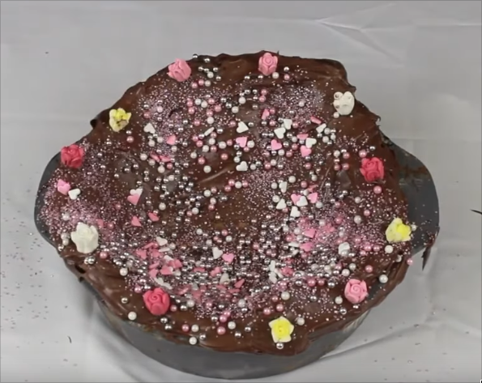

Vomit Cake

Original vomit cake made by Filthy Frank and Maxmoefoe
This recipe was made by Filthy Frank in 07/10/2015. The original,
video also features Maxmoefoe and HowToBasic. Together, they create the first vomit
cake on YouTube. This is a culinary masterpiece, and should only be reproduced by professionals.
Ingredients
- 5 cups of self raising flour
- 3 cup of sugar
- 2 teaspoon of vanilla extract
- 1 cup of vegetable oil
- 1 cup of salt
- 4 eggs
- 5 teaspoon of chocolate syrup
Steps
- Make someone ingest all of the ingredients from top to bottom of the list
- Once all of them are ingested, the person needs to vomit everything into a mixer
- Mix until the doe is formed
- Bring it to the oven for 90 minutes with an temperature of 180°C
- Take the cake out, and add melted chocolate on top with some confetti